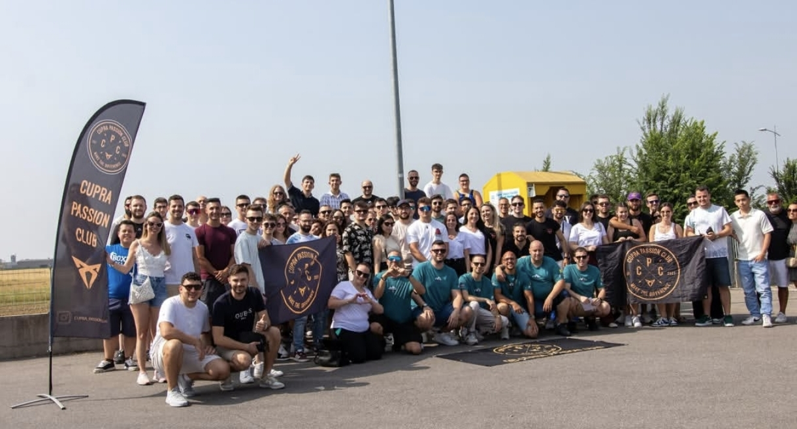
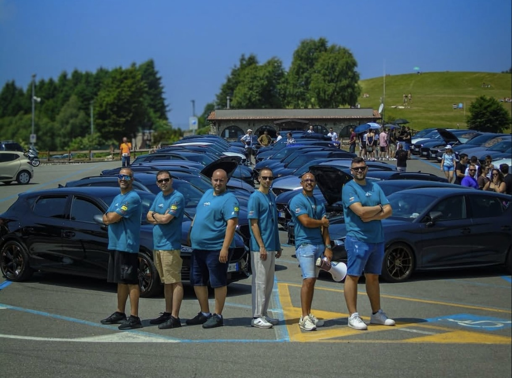
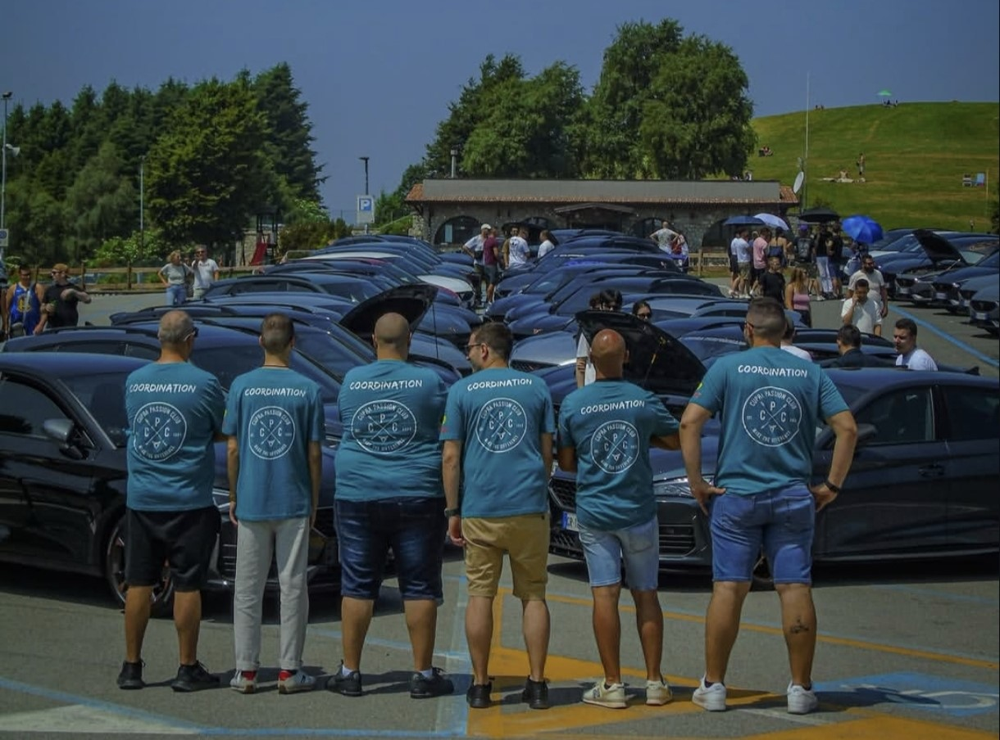

Pubblicato il 15 giugno 2025

Anche quest’anno il Cupra Passion Club ha acceso i riflettori su un evento indimenticabile, il Lake Tour, regalando ai partecipanti una giornata all’insegna della passione per i motori, della bellezza paesaggistica e dell’unione che solo una community affiatata sa creare.
Diventato ormai un appuntamento fisso per gli appassionati del mondo CUPRA, il raduno ha registrato numeri da record con 50 auto presenti e oltre 100 partecipanti, accomunati da un entusiasmo contagioso.

Una chiara conferma del grande lavoro svolto dal team organizzativo, che quest’anno ha arricchito ulteriormente l’esperienza grazie al supporto di numerosi partner e concessionari ufficiali CUPRA che condividono la visione del Club, tra cui:
CUPRA Fratelli Giacomel, Off. Manzo Racing, Farina Pellicole, R2Z Motorsport, PowerKing Chiptuning e New Scamadecor, oltre al prezioso patrocinio del Comune di Grone, sede della tappa dedicata alla pausa pranzo.
Ma il 2025 ha portato con sé anche un aggiornamento del Consiglio Direttivo ora composto da Fabio, Giorgio Z., Giorgio B., Edo, Manu e Mark.
Un’evoluzione strategica, nata con l’obiettivo di ampliare le competenze interne, migliorare l’organizzazione degli eventi e guidare il Club verso progetti ambiziosi, senza mai perdere di vista i valori che da sempre lo contraddistinguono: condivisione, rispetto e passione.

Il Lake Tour 2025 è stato il simbolo di questo cambiamento: non solo un raduno automobilistico, ma un vero e proprio momento di confronto, visione ed entusiasmo collettivo.
All’evento hanno partecipato anche fotografi e videomaker professionisti, con l’aggiunta di un pilota di drone FPV, che ha immortalato i momenti salienti e i panorami mozzafiato tra le colline, contribuendo a rendere l’esperienza ancora più immersiva.
Dal suggestivo tragitto fino alla riva del lago, passando per il pranzo conviviale e i momenti di condivisione tra i partecipanti, ogni dettaglio è stato curato con attenzione per lasciare un ricordo indelebile nel cuore di tutti.
Il futuro del Cupra Passion Club si preannuncia ricco di novità, collaborazioni e nuovi format, con l’obiettivo di valorizzare sempre di più la forza del gruppo e portare il nome del Club verso traguardi sempre più alti.
Questo articolo si può trovare su Elaborare